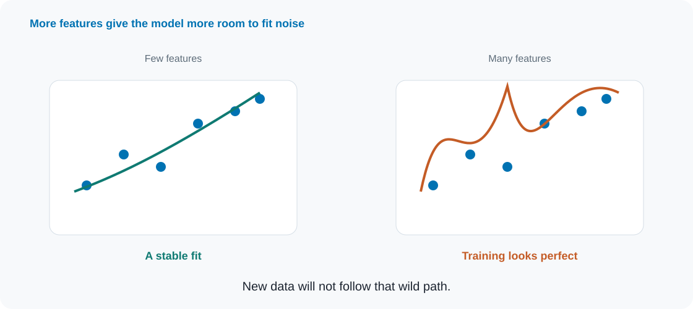
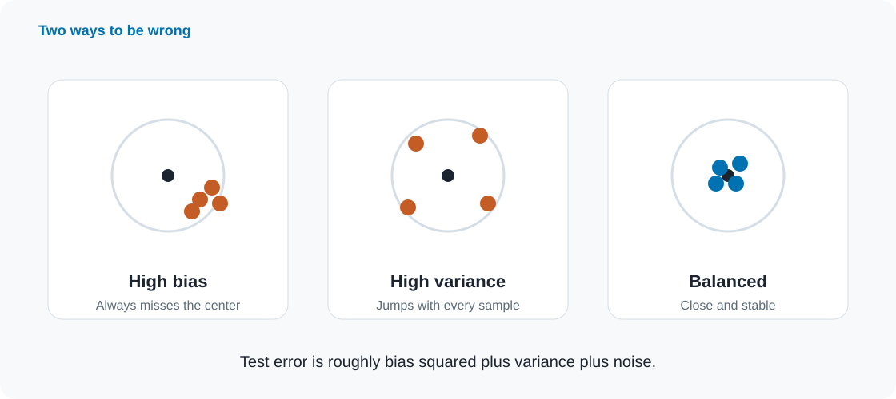
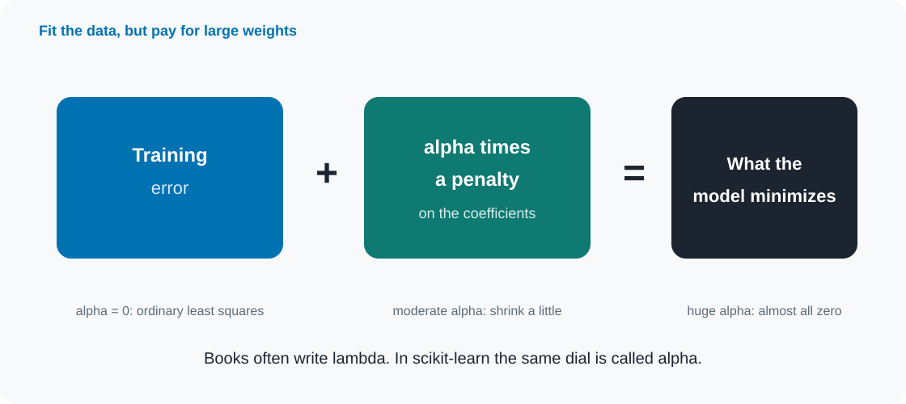
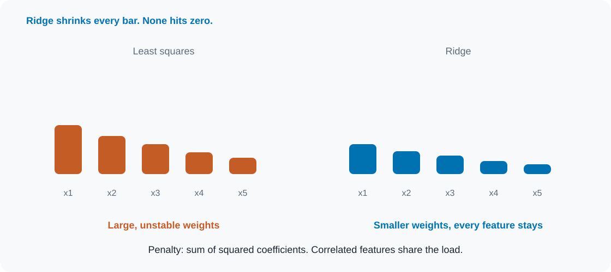
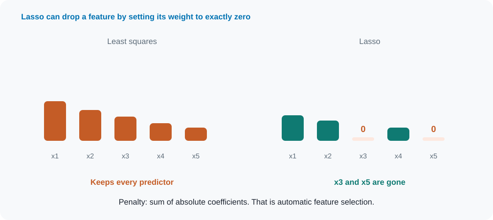
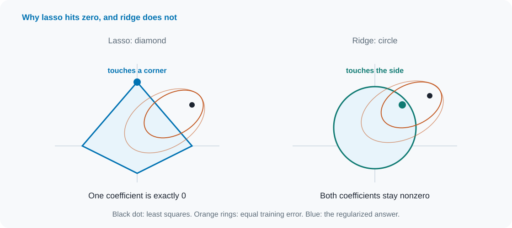
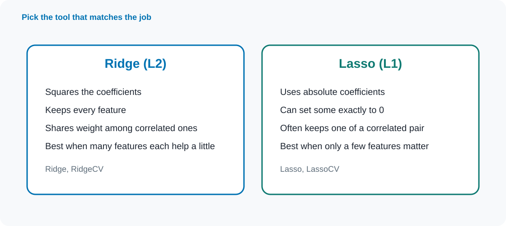
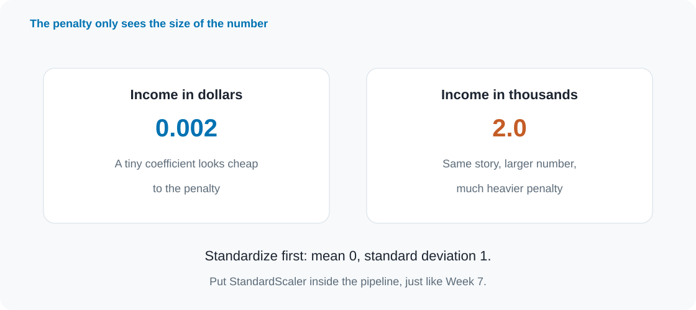
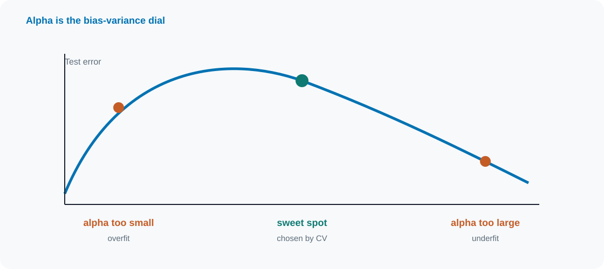
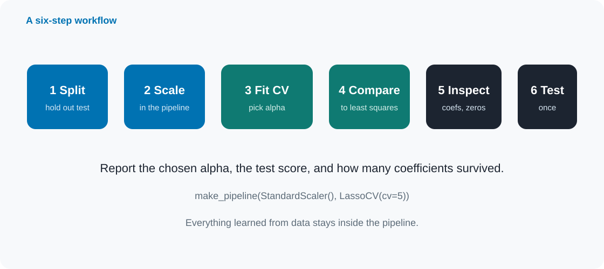

Data 201 · Week 8
Ridge, lasso, and the bias–variance tradeoff
Rebin Muhammad
Montgomery College
Today
01
Why overfit
Too many free parameters fit noise.
02
Bias and variance
Two ways a model can be wrong.
03
Ridge
Shrink every coefficient a little.
04
Lasso
Shrink, and sometimes set to zero.
05
Practice
Scale, tune alpha, then interpret.
The problem
Regularization is how we ask a linear model to stay useful instead of wild.
Part 1
Linear regression, too many features, and the bias–variance tradeoff.
Linear regression
\( \hat{y} = b + w_1 x_1 + w_2 x_2 + \cdots + w_p x_p \)
Weights
What each feature does
A coefficient says how much the prediction changes when that feature goes up by 1, holding the others fixed.
Least squares
Only one goal
Make the squared training errors as small as possible. Complexity is not charged for.
Many features

Bias and variance

Models you know
Rigid
High bias
Large K in KNN. Few features. A line that is too simple. Underfitting.
Balanced
Sweet spot
A moderate K. A moderate number of features. Useful on new data.
Wild
High variance
K = 1. Many features. A high-degree polynomial. Overfitting.
Interpretability
Easier to explain
Lasso, ridge, linear models
Medicine, lending, and science often need to say which features drive a prediction, and by how much.
Harder to explain
KNN, trees, nets
When only accuracy matters and there is plenty of data, flexibility can win. Explanation is secondary.
Part 2
Add a penalty for large coefficients.
The big idea

Three formulas
OLS
Least squares
\( \mathrm{RSS} \)
Only training error. No charge for large weights.
Ridge
L2 penalty
\( \mathrm{RSS} + \alpha \sum_j w_j^2 \)
Squares the coefficients. Shrinks them toward zero.
Lasso
L1 penalty
\( \mathrm{RSS} + \alpha \sum_j |w_j| \)
Absolute values. Can set some weights to exactly zero.
Ridge

Lasso

Picture it

Which one

No universal winner
Elastic Net
A blend
ElasticNet mixes L1 and L2. Handy when groups of features move together.
The rule
Match the goal
Want a sparse model? Start with lasso. Expect many weak predictors? Start with ridge.
Part 3
Scale, choose alpha, then read the coefficients carefully.
Before you fit

Choosing alpha

In code
from sklearn.pipeline import make_pipeline
from sklearn.preprocessing import StandardScaler
from sklearn.linear_model import LassoCV
model = make_pipeline(
StandardScaler(),
LassoCV(cv=5)
)
model.fit(X_train, y_train)
model.score(X_test, y_test)
model[-1].alpha_
model[-1].coef_RidgeCV
Same idea for L2. Pass a grid of alphas if you want.
Test once
Tune on training folds. Open the test set after the choice is locked.
When it matters most
Lasso wins
Few features matter
It can drop the rest and leave a short list.
Ridge wins
Many help a little
Sharing the weight is stabler than deleting most of them.
OLS is fine
Lots of rows, few features
With a stable least-squares fit, the gain can be tiny.
Read carefully
Zero ≠ unimportant
A dropped predictor may still matter. Its information may sit inside a correlated feature that stayed.
Nonzero ≠ causal
A surviving coefficient is a useful association in this model, not a cause-and-effect claim.
Classification
C is inverted
Small C = strong penalty
In LogisticRegression, C works the opposite way from alpha. Large C is closer to an unpenalized fit.
L1 or L2
Same story
L2 keeps every feature. L1 can remove predictors and make the model easier to explain.
A recipe

Pitfalls
Discuss in pairs
A
80 patients, 200 measurements
Identify a few useful measurements. Ridge, lasso, or ordinary least squares?
B
5,000 rows, 25 correlated features
Best predictions. Keeping every feature is fine.
C
10,000 rows, 3 features
Roughly linear. Will ridge or lasso help much?
D
Lasso sets age to 0
Can we say age does not matter?
Keep these
Readings and homework
ISLP Chapter 6. Müller and Guido, Chapter 2: ridge, lasso, and C.
Homework: fit Lasso at alpha 0.1, 10, and 100 on Hitters. Compare train and test RMSE, count nonzero coefficients, and choose a model for four short scenarios.
Submit Week8_HW.ipynb to GitHub, then the repo link in the Dropbox.